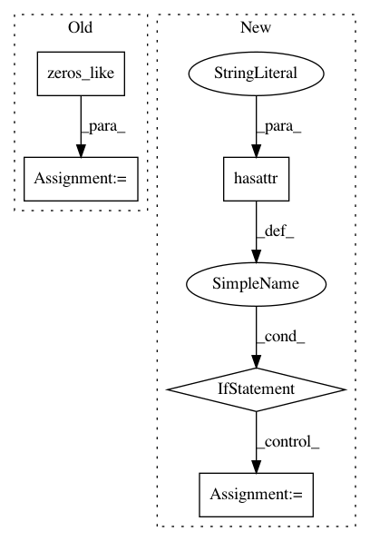

3b60554919507e818bf783b3dab6f944a8ef9282,scipy/signal/waveforms.py,,unit_impulse,#Any#Any#Any#,485
Before Change
shape = np.atleast_1d(shape)
if idx is None:
idx = tuple(np.zeros_like(shape))
elif idx == "mid":
idx = tuple(shape // 2)
out[idx] = 1
After Change
idx = (0,) * len(shape)
elif idx == "mid":
idx = tuple(shape // 2)
elif not hasattr(idx, "__iter__"):
idx = (idx,) * len(shape)
out[idx] = 1
return out
In pattern: SUPERPATTERN
Frequency: 3
Non-data size: 5
Instances
Project Name: scipy/scipy
Commit Name: 3b60554919507e818bf783b3dab6f944a8ef9282
Time: 2016-08-07
Author: endolith@gmail.com
File Name: scipy/signal/waveforms.py
Class Name:
Method Name: unit_impulse
Project Name: hls-fpga-machine-learning/hls4ml
Commit Name: 8c4ca59b578a5e4bc7ef82c69722247307280160
Time: 2020-11-18
Author: sioni.summers10@imperial.ac.uk
File Name: hls4ml/model/optimizer/passes/qkeras.py
Class Name: QKerasPO2Quantizer
Method Name: __call__
Project Name: hls-fpga-machine-learning/hls4ml
Commit Name: 8c4ca59b578a5e4bc7ef82c69722247307280160
Time: 2020-11-18
Author: sioni.summers10@imperial.ac.uk
File Name: hls4ml/converters/keras/qkeras.py
Class Name: QKerasPO2Quantizer
Method Name: __call__